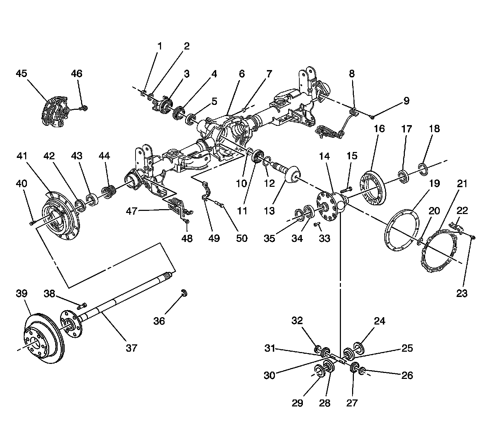
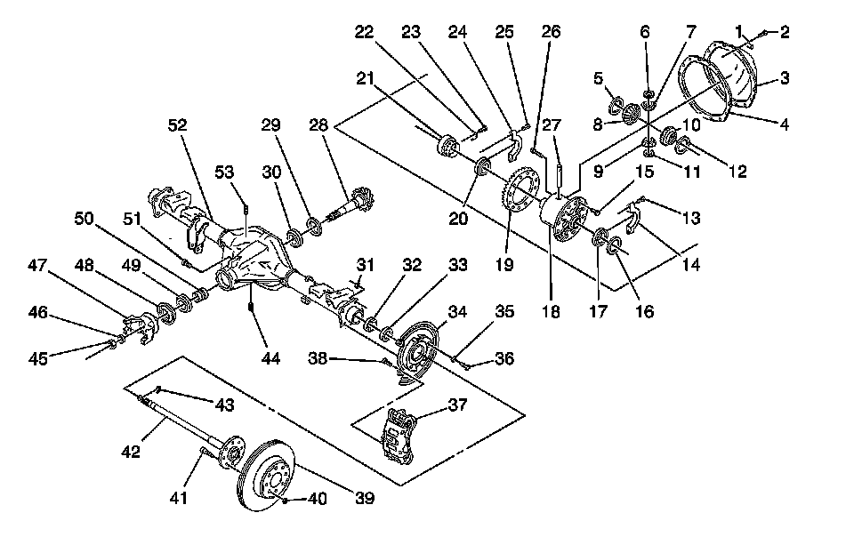

Rear Axle Disassembled Views
Rear Axle Disassembled Views
8.6 Inch Rear Axle:

1 - Pinion Gear Nut
2 - Pinion Gear Washer
3 - Pinion Gear Yoke
4 - Pinion Gear Oil Seal
5 - Pinion Gear Outer Bearing and Cup
6 - Rear Axle Housing
7 - Rear Axle Housing Fill Plug
8 - Wheel Speed Sensor Assembly
9 - Bolt
10 - Pinion Gear Bearing Spacer
11 - Pinion Gear Inner Bearing and Cup
12 - Pinion Gear Bearing Shim
13 - Differential Drive Pinion Gear
14 - Differential Case
15 - Pinion Gear Shaft Lock Bolt
16 - Differential Ring Gear
17 - Differential Side Bearing and Cup
18 - Differential Side Bearing Shim
19 - Rear Axle Housing Cover Gasket
20 - Rear Axle Housing Cover Magnet
21 - Rear Axle Housing Cover
22 - Brake Pipe Clip
23 - Rear Axle Housing Cover Bolt
24 - Thrust Washer
25 - Differential Side Gear
26 - Thrust Washer
27 - Differential Pinion Gear
28 - Differential Side Gear
29 - Thrust Washer
30 - Differential Pinion Gear Shaft
31 - Differential Pinion Gear
32 - Thrust Washer
33 - Differential Ring Gear Bolt
34 - Differential Side Bearing and Cup
35 - Differential Side Bearing Shim
36 - Rear Axle Shaft Lock
37 - Rear Axle Shaft
38 - Stud
39 - Brake Rotor
40 - Bolt
41 - Brake Backing Plate
42 - Rear Axle Shaft Oil Seal
43 - Rear Axle Shaft Wheel Bearing
44 - Wheel Speed Sensor Ring Assembly
45 - Brake Caliper
46 - Brake Caliper Bolt
47 - Wheel Speed Sensor Assembly
48 - Bolt
49 - Differential Bearing Cap
50 - Differential Bearing Cap Bolt
9.5 Inch Rear Axle:

1 - Brake Pipe Clip
2 - Rear End Housing Cover Bolt
3 - Rear Axle Housing Cover
4 - Rear Axle Housing Cover Gasket
5 - Thrust Washer
6 - Thrust Washer
7 - Differential Pinion Gear
8 - Differential Side Gear
9 - Differential Pinion Gear
10 - Differential Side Gear
11 - Thrust Washer
12 - Thrust Washer
13 - Differential Bearing Cap Bolt
14 - Differential Bearing Cap
15 - Differential Ring Gear Bolt
16 - Differential Bearing Shim
17 - Differential Bearing
18 - Differential Case
19 - Differential Ring Gear
20 - Differential Bearing
21 - Differential Bearing Adjusting Nut
22 - Differential Bearing Adjusting Nut Lock
23 - Bolt
24 - Differential Bearing Cap
25 - Differential Bearing Cap Bolt
26 - Pinion Gear Shaft Lock Bolt
27 - Pinion Gear Shaft
28 - Pinion Gear
29 - Pinion Gear Bearing Shim
30 - Pinion Gear Inner Bearing
31 - Park Brake Nut
32 - Bearing
33 - Rear Axle Shaft Seal
34 - Brake Backing Plate
35 - Washer
36 - Brake Backing Plate Bolt
37 - Brake Caliper
38 - Brake Caliper Bolt
39 - Brake Rotor
40 - Nut
41 - Stud
42 - Rear Axle Shaft
43 - Rear Axle Shaft Lock
44 - Rear Axle Housing Drain Plug
45 - Pinion Gear Nut
46 - Washer
47 - Pinion Gear Yoke
48 - Pinion Gear Seal
49 - Front Pinion Gear Bearing
50 - Pinion Gear Bearing Spacer
51 - Rear Axle Housing Fill Plug
52 - Rear Axle Housing
53 - Rear Axle Vent Hose Connector